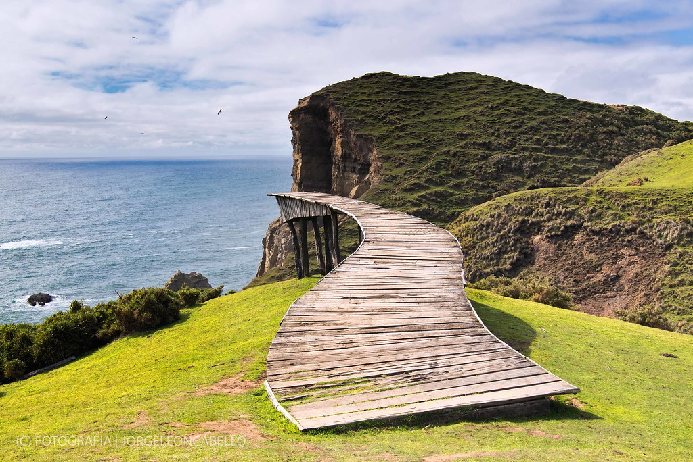
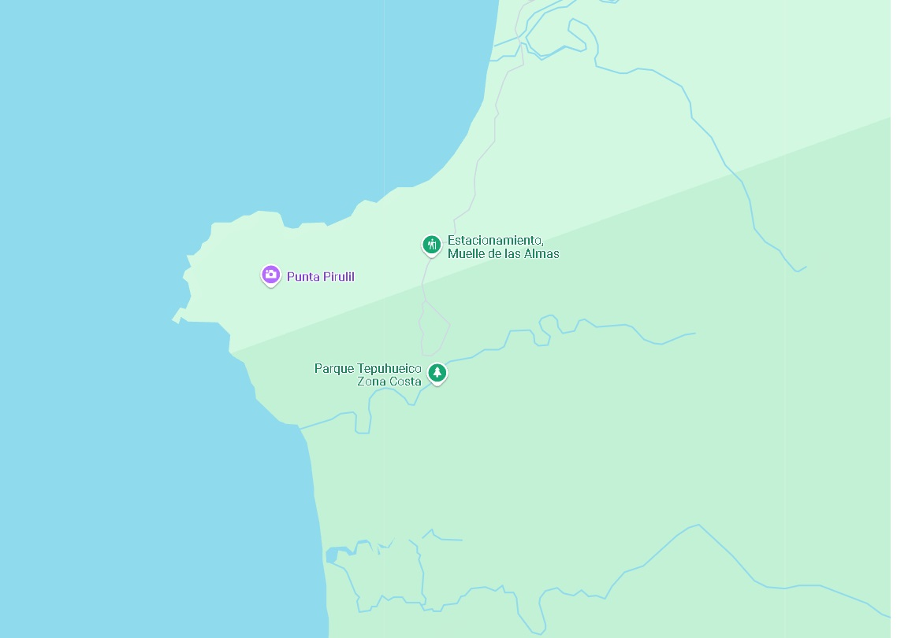
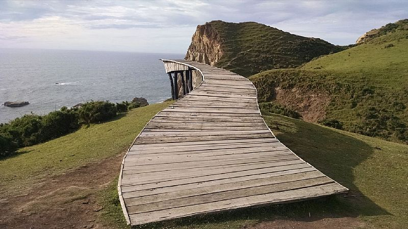

Historia
El Muelle de las Almas, también conocido como Muelle del Estero de Castro, es una estructura icónica ubicada en la isla de Chiloé, al sur de Chile. Según la leyenda local, en este lugar se aparecen las almas de los pescadores fallecidos, quienes regresan para despedirse de sus seres queridos antes de partir hacia el más allá.
Ubicación
El muelle se encuentra en el sector de Cucao, cerca del Parque Nacional Chiloé, rodeado de un entorno natural de gran belleza.
Coordenadas: -42.575944, -73.792921
Visita
El Muelle de las Almas es un lugar emblemático y atractivo para los turistas que visitan Chiloé. Además de su conexión con la leyenda, ofrece vistas panorámicas impresionantes y una atmósfera tranquila que invita a la contemplación y reflexión.
Horario: Abierto todos los días, 24 horas
Precio: Entrada gratuita
